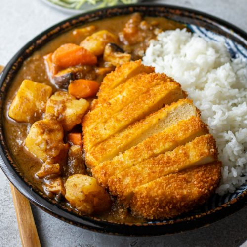

Curry

Description
This recipe is the best thing you will ever make and taste.
Ingredients
- tofu
- panko
- flour
- eggs
- rice
- curry-blocks
- onions
- potatoes
- carrots
Steps
-
peel and cut the carrots, an onion and potatoes into bitesized pieces
and fry them in a pot with some vegetable broth seasoning.
-
While frying cut your tofu into small slices. Then, add water to your vegetables,
enough to cover them. Now you put a few curry-blocks and let it simmer. Put the
blocks one by one and add to taste and consistency.
-
While this is cooking you can
coat your tofu with flour, egg and panko and fry it.
Serve while still hot.